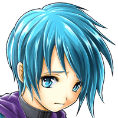

ミセル
いつまでも ワガママ言ってるんじゃないわよ！
ミセル
アンタは私の言うことを 聞いてればいいの！
ＤＵＥＬ‐ＧＸ
キタイダメージニヨリ、 コード６６６、ハツドウ、フカノウ……。
ミセル
アンタのせいで カニが余計なことをしかけたじゃない！
ゼルバーン
相変わらず ムチャクチャなヤツだな……。
ミセル
まったくアンタたちは、 好き勝手言って……。
ミセル
ねえカニ、見てご覧なさいよ。 メルキオを止めてみせたわよ。
ミセル
アンタが犠牲になることなんて なかったでしょ！
ミセルたちが、メルキオを止めてから数日後のミセルの邸宅付近にて……。
メルキオ
ホンジツノ、ＤＵＥＬ‐ＧＸノ、セイビハ、 カンリョウシマシタ。
メルキオ
キタイノ、シュウフクハ、 １００パーセント、カンリョウシテイマス。
メルキオ
キドウシナイノハ、オソラク、 システムノ、モンダイカト……。
メルキオ
ワタシハ、マスター・ロディント、 デアウイゼンノ、メモリーヲ、
メルキオ
デスノデ、ＤＵＥＬ‐ＧＸノ、システムニ カイニュウ、スルコトハ、デキマセン。
メルキオ
タノマレテイタ、 カダンヘノホウスイハ、
ロディン
カニが止まった後、 メルキオが再び動き出したのは驚いた……。
ティアラ
ロディンさんをマスターと呼んで 跪いた時はもっと驚きましたね。
ロディン
俺はヤツを倒すため、 ずっと旅をしてきたんだが、
ロディン
こんなことになるとは、 思いもよらなかった……。
ティアラ
でも、今のメルキオを倒そうなんて 思ってないんですよね？
ロディン
メルキオも動いてるからって ワケじゃないが、
ロディン
お前が動かなくなった後、 大変だったんだぜ。
ゼルバーン
大暴れするミセルを抑えるのは 一苦労だったな。
ティアラ
「自分がカニを壊したんだ」って 今度は信じられないくらい落ち込んで……。
ティアラ
私、ミセルがあんなになるなんて、 思ってもみませんでした……。
ゼルバーン
それだけ、アイツにとってカニの存在は 特別だった…ということなんだろうな。
ティアラ
カニさんが目を覚ますまで、 何度でも……。
ＤＵＥＬ‐ＧＸ
キタイジョウキョウ、 ………イジョウナシ。
ＤＵＥＬ‐ＧＸ
システム…… リカバリーキノウ、サドウ。
ノエル
史実では、 ミセルはＤＵＥＬ‐ＧＸのことを気遣い
ノエル
おもいっきり攻撃できず、 自爆を止められなかったようだけど、
ノエル
あの時、彼女が思うがまま行動していたら どういう結末になったか？…と思ってね。
ノエル
ミセルという人物は、現代の我々から見ても 類まれ無い行動力を持っていたからね。


ノエル
ただまあ、その分、性格は ちょっと難があるみたいだけど……。
ノエル
確かにミセルは 遠慮とか無縁な性格のようだけど、
ノエル
あいつなんかより、 ずっとマトモな人物だよ！
ルジーナ
クッ… 誰か俺のことを噂してやがるのか？
ルジーナ
噂になっちまうのは 仕方がねーことだろうがな！
リント
そういえば、 少し気になることがあるんだけれど……。
リント
ミセルが最初にメルキオを倒した時、 なぜかメルキオは力を増して復活したよね。
リント
メルキオの能力…というわけでも、 なさそうだったけど。
ノエル
研究では、外部より何らかの力が 加えられたのではないかと
ノエル
現段階では、 ハッキリとは分かっていないんだ。
リント
もうちょっと、 研究材料がほしいところだね。
ノエル
ちょっと癪だけど、今後も彼女には 協力してもらわなきゃね……。